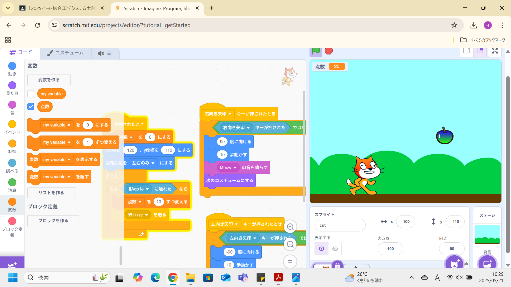

1週目のレポート ： 公大高専１年実習I-1
b1班10番 guest-6667
第1週目
1-1 サイエンスアート
1.内容
Scratchを使ってサイエンスアートを作成した。ブロックを組み合わせてプログラムを作成し、
それに沿ってスプライトなどが動くということを学んだ。猫がペンを前と後ろに動かし、ランダムに移動することでアートが描ける。
2.感想
Scratchでアートを描いたことはあまりなかったので、好きに図形を書いたりできるのは楽しかった。
ただ、作りたい模様があってもその通りにできるようにプログラミングするのは難しいと感じた。
1-2 ゲーム

1.内容
猫を左右に動かせられるようにし、またリンゴをキャッチできるようにした。
リンゴは上から落ちてきて、キャッチすると得点が入るようにした。
2.感想
思っていたよりも簡単にゲームが作れるんだなと思った。
自分で自由に好きなシステムを追加できるのが自分でゲームを作れる強みだなと感じた。
1-3 ホームページ作成
私のホームページ
1.内容
githubを使い、HTMLで自分のホームページを作成した。
また、ホームページに画像をアップロードしたり、別ページへのリンクを作成したりなどもした。
2.感想
pythonとかCなどのプログラミング言語であればなんとなく見たことがあるけど、
今回のようなHTMLは今までにやったこともなかったので、新鮮で楽しかった。
各ページへのリンク
1週目のレポート
2週目のレポート
3週目のレポート
私のホームページ